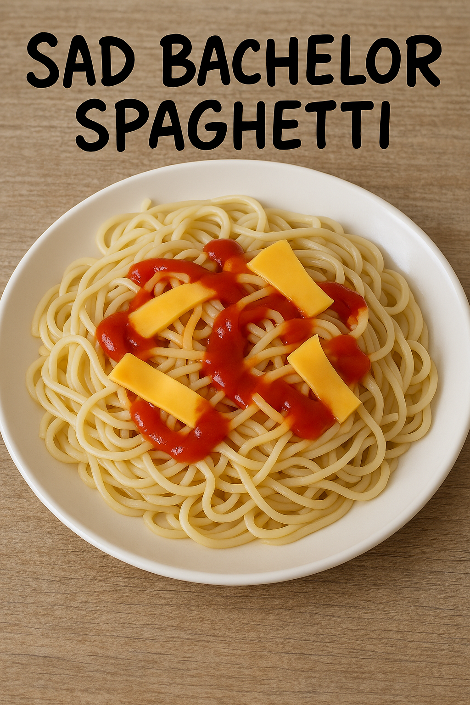

Sad Bachelor Spaghetti (Serves 1... obviously)

How chefs describe it ?
A culinary masterpiece born out of desperation and minimal grocery runs. Al dente noodles meet a chaotic drizzle of ketchup and dramatically torn slices of American cheese—because who needs real sauce or dignity? Best enjoyed on the floor of your studio apartment while questioning your life choices. Optional: garnish with existential dread.
The ingredients you'll need
- 1 pack of dry spaghetti (or whatever's on sale)
- Ketchup (yes, it's the sauce now)
- 1 sad-looking slice of American cheese
- A single tear (optional, for seasoning)
The steps you should follow
- Boil water like you're trying to steam away your poor life decisions.
- Drop spaghetti in. Stir once. Contemplate your life.
- After 8 minutes, strain pasta using a plate because your colander is MIA.
- Squeeze ketchup directly onto pasta like a true culinary rebel.
- Tear cheese into dramatic, uneven shreds. Sprinkle like confetti at your pity party.
- Mix with a fork you probably haven't washed since last Tuesday.
- Serve in a bowl you once used as an ashtray. Cry. Eat. Repeat.
Pro Tip: Add hot dogs for a fancier version (aka "Broke Bolognese").
Enjoy your depressing meal !
Back to Home